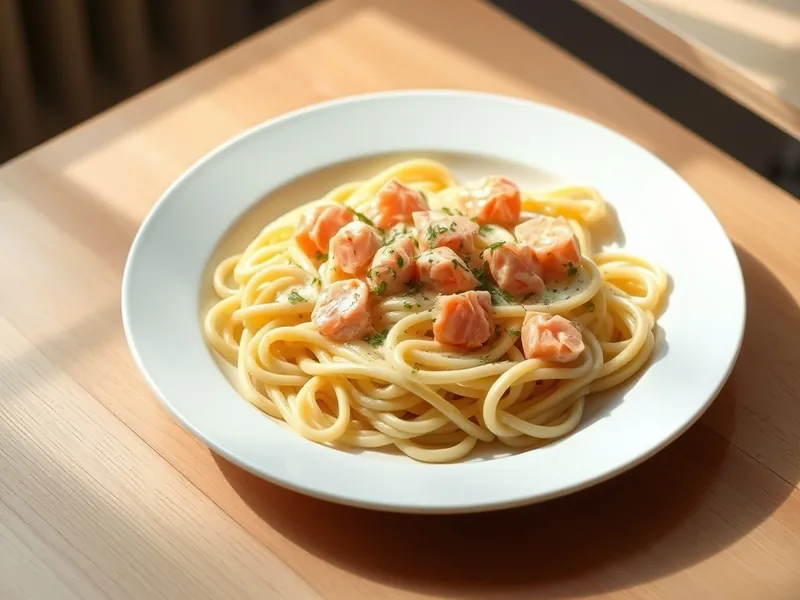

Фото: Иллюстрация ИИ, Cloudflare Workers AI
Паста с сёмгой в сливочном соусе
Паста с кусочками сёмги в сливках с укропом и лимоном
20 мин3 порц.655 ккал на порциюБ 28 · Ж 29 · У 66Итальянская кухня
Открыть в приложении: порции, таймеры, список покупок
Продукты на 3 порц.
- Макароны270 г
- Сёмга / лосось250 г
- Сливки 20%200 мл
- Чеснок1 зуб.
- Сливочное масло1 ст. л.
- Укроп0,5 пучка
- Лимон по желанию1 долька
- Соль2 ч. л.
- Перец чёрный молотый1 щеп.
- Вода3000 мл
Как готовить
- Вскипятите воду на сильном огне, посолите и сварите пасту по инструкции на упаковке, обычно 9-10 минут.
- Сёмгу без кожи нарежьте кубиками 2 см.
- Растопите масло на сковороде на среднем огне, обжарьте мелко нарезанный чеснок 30 секунд.
- Влейте сливки, доведите до лёгкого кипения, положите рыбу и томите 3-4 минуты, пока кусочки не станут светло-розовыми внутри. Посолите и поперчите.
- Откиньте пасту, переложите в соус, добавьте рубленый укроп и аккуратно перемешайте. Сбрызните лимонным соком.
Совет. Подойдут обрезки и брюшки сёмги, они дешевле филе. Перемешивайте бережно, чтобы рыба не превратилась в кашу.